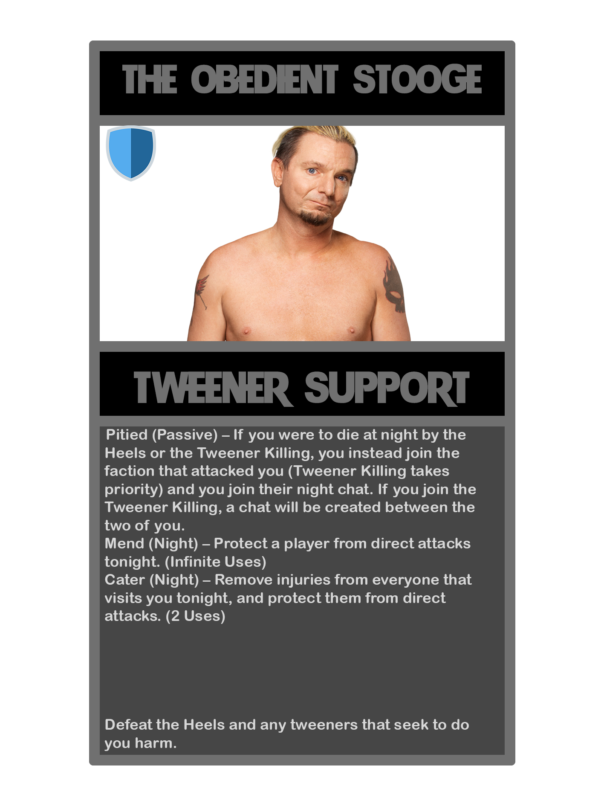
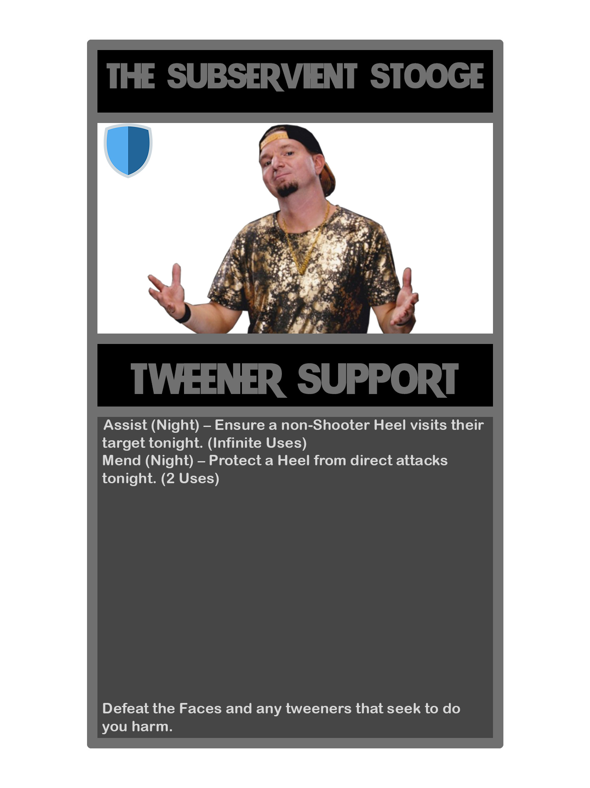
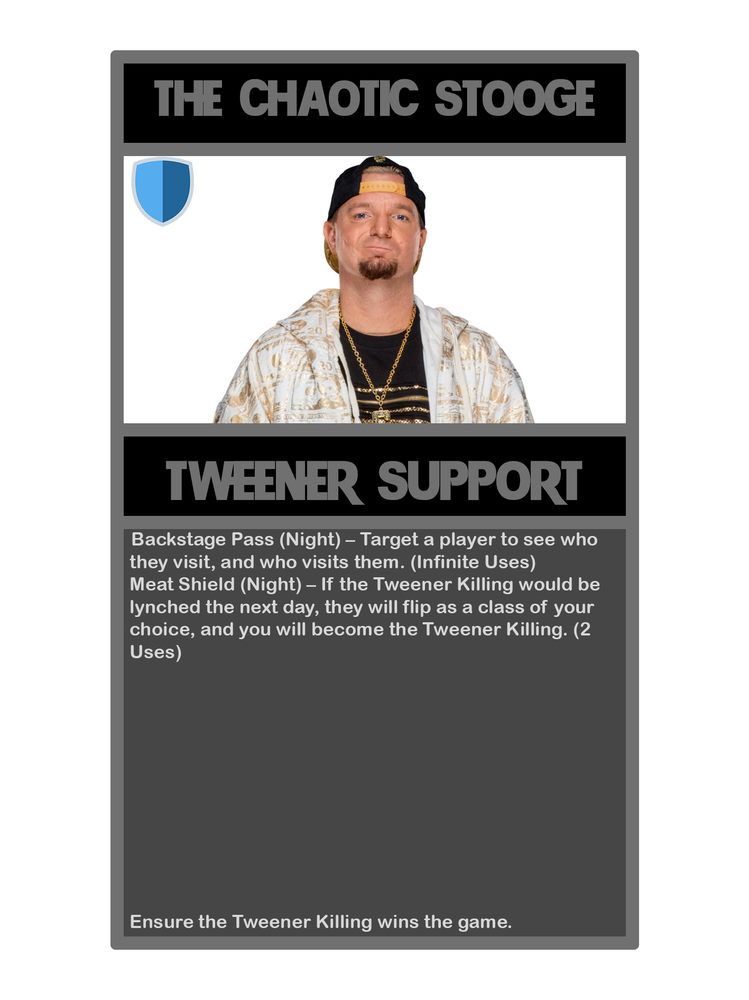

1210
Good King but they have an unlimited use of Royal Pardons and must use them every day on someone or else they will be modkilled.

Good King but they have an unlimited use of Royal Pardons and must use them every day on someone or else they will be modkilled.
Every class rolled after this will be a King. Reroll this slot.
Moleland’s Pretender
1213
Communicator but they only have a chat with the person below them regardless of their passive.
They are not informed of this
If this slot is rolled, Geyde will become a Litzen instantly for being a failure and messing up the numbers
1215
The Overmind
Neutral Special
My Eyes Are Broken (Passive) - You will know everyones classes, but are not allowed to reveal them until the game ends or you will be modkilled, bypassing everything. You will not join dead chat if there is one and are not allowed to speak to the living. You are also immune to all forms of death and occupation.
On Your Mind (Passive) - At the beginning of the game, it will be revealed that the Overmind (1209) is in the game.
Visit (Day) - Visit a player tonight, bypassing visit prevention abilities and visiting effects. This does nothing. [Infinite]
Those Bastards Lied To Me (Night) - If there are any bastard mechanics, then you will learn one of them tonight. [2 Uses]
Your goal is to be in the last 15%(rounded up) of players alive.
gotta add “reroll this slot” again @Wazza
If the game is still going N3 and there is a NK/multiple NKs in the game alive, a random NK’s role is swapped with a random BD/town player. Reroll this spot.
MaximusPrime will gain the ability “Reroll this slot” where they can reroll any player once. Reroll this slot.
Crazed Lunatic
Neutral Killer
The Shadows in my Room (Passive) - You are death immune at night. If you are executed for treason, the night will be skipped and the next day will begin, abilities that were from the day will still be used for the night.
The Depths of Hell! (Passive) - If someone says their real class, they will be modkilled, this effect plays until you die.
Joint together by the shadows (Day) - Your votes count as two today. - 3 Uses.
Luck of the Draw (Night) - Target a player and the host will roll a dice, if the dice lands on an odd number you will kill that player. If the dice lands on an even number you will heal that player. - Infinite Uses.
Paranoia (Night) - Occupy and kill any player visiting you tonight, can not be used until night three. - 1 Use.
Confessor Jiji
Neutral Support
Offering Service (Passive): Everytime a player dies during night they leave a shade that will haunt the door of the player who killed them (more than one if he was attacked more than once). When you visit a door that has a shade on it, it will vanish and you will revive the player that owns it the following morning.
Void Handling (Passive): When you spawn, if there is no The Knight spawned, half the players will get a feedback as if there is a The Knight in the game. The Knight.
Regret Reading (Day): Exhume a player that died during the night and at the start of the next night you will know the class of their attacker. 3 uses.
Hungry (Night): You are hungry, in need of Rancid Eggs to eat. Visit a player, ask them for food, and in trade you protect their shade from evading their body — if they die this night, you will revive them, and the attacker will think the attack failed. 3 uses.
Free of Regret (Night): Visit two players, having a fun conversation for the night. If one of them attacks someone that is not in the conversation, you will be notified. 1 night cooldown. Unlimited uses.
Goal: Revive 3 different players.
The Pale King
Neutral Special
Savior of Hallownest (Passive): You will be announced as the King. Your vote counts as two.
No Cost Too Great (Passive): If there is not a The Knight at the game yet, one will be spawned. You cannot have The Infection.
Decide Fate (Day): Decide if someone will be executed or pardoned. If there is no trials at this game, you can instead instantly lynch them. 1 use.
Seal (Day): Seal a player for the following night, making them unable to be visited. 3 uses.
Wyrm (Night): If you die tonight, all attackers will be notified their action failed, and you will revive. 2 uses.
Path of Pain (Night): Put someone at a deadly maze for the night, preventing them from taking any actions. 2 uses.
Goal: Survive to the end of the game.
Whoever rolls this slot can pick their own class from this list.
Your day ability on 1218 doesn’t have a specified number of uses
This slot has immunity to occupation and redirection. If the slot rolls into a class that would have occupation and redirection immunity normally, they instead LOSE those immunities. Reroll this slot.
Vilhelm
Blue Dragon Special
Not-Really-Blood Brothers (Passive) - You will have a private chat with Richard, whom Maxi forgot to rename the class but is the guy who talks with Vilhelm, able to talk to him at any time you’d like.
Royal Blood (Passive) You can step earlier than other classes to the throne. If the Prince or the Drunk (or its conversions) didn’t step up, you automatically become the king because this is how nobility works. You will keep this passive even if your class changes.
At Dawn (Day) - Wake up obnoxiously earlier than everyone. The day will start 5 hours earlier for you. - Infinite uses.
Distract (Day) - Silence a player for one minute. Exactly, one minute. And be grateful, because most peoplehave shorter attention spans - 3 uses.
Sense of Personal Space (Night) - Visit everyone tonight, even if they are jailed, because the Duke can open as many doors he fucking wants. - Infinite uses.
Sips tea (Night) - Summon Richard to wherever you are right now to hear some gossip. - 1 uses.Defeat the scum factions and be turned King.
Palie
Cult Special
High Priestess Sheya (Passive) - You will appear as the Priest to all checks done to you.
Ominious (Passive) - You were formerly an Apostle, who traded your ability to hear the dead for one to hear the voices of the dark. You may talk to the host. The host is now a player under the name Mithras or Corax, of their choosing, who has the cult win condition.
Merchant Turmoil (Day) - Create a fight over a book in the merchant square. You will remove the Paladin’s Test of Faith ability. - 1 use.
Lead to the Dark (Day) - Kidnap the Hunter. For the remaining of this cycle, the next night and the next day, they will appear to be jailed by the Prince. If the Hunter is not in the game, kidnap PKR. - 1 use.
Strange Ritual Shit (Night) - Sacrifice an AFK Cult Member to do an effect of Geyde’s choosing. - Infinite Uses.Your objective is to defeat the Blue Dragon and any neutrals that seek to do you harm.
“Nicholas”, the failed
Neutral Killer
Cloak Of Self (Passive) - You appear as an Acolyte to all checks. You can also use both your night abilities on the same night.
Soulcounter (Passive) - You always know how many souls you have and from whom they are. When you have one soul, you gain occupation and redirection immunity. When you have two souls, you gain night immunity. When you have three souls, you can appear to abilities as a class of your choosing. When you have four souls, your kills are strongman. When you have five souls, your soulboundeds are roleblock and occupation immune. When you have six souls, the game ends and everyone but you and your soulbonded loses.
Fiend Pact (Day) - Offer a random item (bulletproof vest, cop check, gun, medkit, poison dart, fruit) to a player. If they accept, you soulbind them.
The Book-keeper (Day) - Ask the host a question. They may answer “yes”, “no” or “I don’t know” - Infinite Uses.
Haemophilia (Night) - Remove a soulbind. Funeral Pyre powers increase for this night. - 3 uses, 1 night cooldown
Funeral Pyre (Night) - Set your target ablaze, killing them. If Haemophilia is used, the target is immune to visits from others except you, and anyone who attempts to visit them is also killed by the flames. - Infinite uses
Your objectives are: Defeat the Cult, the Darkest Dungeon, the Abyss, the Vatican, the Light; the starting Sunbearer dies; all Lumus players (if 1559 is rolled) but you (if you are Lumus) die; The Paladin (77 and 263), Cult Killer (581), Goku (891), Cult Leader (92 and 1093), Crusader and Zealot (582), Bishop (862 and 1562), Priest (191), Preist (194), Memes (568), Judas Priest (966), Saulus Priest (967), Jesus Priest (968), Demon Lord Zeraxos (723 and 969), Matthias Priest (1048), The Priestess (1566), The Demon (421), The Devil (439), JESUS CHRIST (765), Gonk (898), The Occultist (1108), The Fire Nation Attacked (1457), The Jevil (443), Stop fucking copy pasting the same classes Hjasik (479), The Sanctuary Maiden (9), The Monster Hunter (396), The Bishop (1562), Generic JRPG Healer (1572), Dreaming God (355, 469 and 473), Asheurance (678), Demigod (718), Godmiller (851), Möth (1054), God Foolsochist (1477), Vanilla god (1486), Jesus Christ (660), Defacto Leader (1866), Holden Cross (1918), Hervis Daubeny (1919) die; guarantee all roles with book related flavor live and are not converted by the Cult, the Darkest Dungeon, the Abyss, the Vatican, the Light, the starting Sunbearer and all Lumus Players .
Shouldn't be in classcard but must be consultable in this thread - host notes: You mus cut the parts of the win conditions that do not apply - if the Sunbearer, for example, didn't spawn, remove mentions of it in the win condition. This way, Nick is informed of what spawned. If none of those win conditions apply, Nick's wincon is to eliminate all non-neutrals.
Turbo Game Killer
This class, at the discern of the host, may be or not be Turbo-exlusive.Neutral Offensive
Slow Death (Passive): For every additional day you survive, the night increases by 5 minutes permanently.
Painful Death (Passive): You are night immune and all dayvigs will be reflected back at the user. If you are lynched, add 1 minute to the night phases for every player that voted you up. If you die at though something bypassing your immunity, add 10 minutes to the night phases.
Grant of Time (Day): Instantly skip the day phase, adding 7 minutes instead of 5. All forms of night chat cannot be used tonight. You gain a use every time you are attacked. [1 Use]
Waste of Time (Day): Occupy everyone tonight, including yourself, bypassing all immunities. Increase the night by 1 minute for every player occupied. Gain an additional use for every 3 players treestumped. [2 Uses]
Why is This Even Allowed (Night): Temporarily treestump a player for a day and a night. If they are scum, they will be unable to use their night chat tonight and be unable to use day abilities instead. You may target 2 people a night if you disable your passive for the next day. [Infinite]
A Stump is Already Dead (Night): Kill the person you have currently tree stumped, bypassing everything. Additionally, this will add 2 minutes to the night phases. Gain a use every time you are occupied or redirected. [1 Use]Get the game canned for bypassing the maximum duration timespan, or for inactivity.
Richard
Blue Dragon Social
Royal Blood (Passive) - Votes to become king count as two for you.
Almost Blood Brothers (Passive) - You will have a private chat with Vilhelm, able to talk to him at any time you’d like. You will also be unable to step up for king as long as he is alive.
Pull Rank (Day) - You will add +2 to your rolls today. [∞ Uses, 1 day cooldown]
Sponsor (Night) - Give a player some gold. You have a massive amount after all, what’s a few gold coins to you? You will gain 10 uses every 4 days. [1000 Uses]
Misslead Kiss (Night) - At Night 2, you will confess your feelings. It does nothing other than making the whole situation extremely awkward. After this ability is used, you and VIlhelm may not talk to each other directly in the thread. - 1 use
Your objective is to defeat the Unseen, Cult, Green Kraken, and any neutrals that seek to do you harm.
The Sorcerer
Neutral SupportPerception (Passive) - You can see very well. You also have a cat.
Mage Armor (Passive) - You are immune to bleeding and poison and have magic powers but don’t know how to use them
Bluff (Day/Night) - Bullshit your way out of things once again with your godly bluff rolls. [∞ Uses]
Brew Potion (Day/Night) - You can brew a potion whenever you are near a brewing station, so long as you have the materials. [∞ Uses]
Your goal is to ???
Change yer numbers, 1222 already exists
shakes fist

Notes:
Pitied’s effects apply to being killed by any NK or scum faction. In the case of multiple NKs or scum factions killing the Stooge in the same night, the faction they join will be chosen by RNG.
Direct attacks are specifically attacks that count as visiting.
Cater will remove effects such as bleeding, poisoned, and similar.
Wincon changed to: Defeat the scum factions, and any neutrals that seek to do you harm.

Notes:
Assist applies to any non-killing-type scum faction member, and in the case of a scum faction with a factional kill, will not work on the person performing the factional kill.
Direct attacks are specifically attacks that count as visiting.
Wincon changed to: Defeat the good faction(s), and any neutrals that stand in your way.

Notes:
Meat Shield applies to the Neutral Killing you are aligned with.
Wincon changed to: Ensure the Neutral Killing you are aligned with wins the game.
Popo
Smash Killer
Ice Climber (Passive) - If Nana is still alive, your attacks will bypass death immunity. If you die before Nana, Nana becomes this class.
Freeze (Day) - Prevent a player from using their day and night abilities for this cycle. - 3 uses
Hammer Slam (Night) - Attack a player. - Infinite uses
Defeat the good faction and all neutrals that stand in your way.
Nana
Smash Support
Ice Climber (Passive) - If you are still alive, Popo’s attacks will bypass death immunity. If Popo dies before you, you become Popo.
Ice Shield (Day) - Protect a player from day and night attacks for this cycle (This does not include lynching). - 3 uses
Motivation (Night) - Guarantee that a selected Smash player’s action succeeds tonight. - Infinite uses
Defeat the good faction and all neutrals that stand in your way.
(If either Nana or Popo get rolled, the other Ice Climber has to spawn)
(Also, Blue’s giving me flashbacks back when I was the Stooge ;-; )
1232
Roleplayer
Unknown SpecialNo breaking character! (Passive) - You must send a character sheet in your class card by the end of the first cycle. It must detail your personality, name, and your backstory. Your alignment is decided by the backstory that you have sent, and your abilities are decided by the host who reads it.
Your wincon is determined by your backstory.
1233
Kirby
Smash SupportDance (Passive) - At any time you may remove the effects of ‘Copy Ability.’
Inhale (Day) - Swallow a player whole, rendering them unable to be targeted by abilities or target other players with abilities. They will not be notified unless they are a member of the Smash Faction. Using this will enable the usage of ‘Copy Ability’ on the player you targeted. (3 Uses)
Copy Ability (Night) - Learn all abilities of the player you targeted with Inhale, removing the ability to use Inhale, or any other abilities gained from this ability until they have been removed by Expel. (Infinite Uses)
You win when the good faction and any players that would stand in your way of domination have been defeated.
Mr. Sandman
Neutral Special
The Champion (Passive) - You are announced as King at the start of the game. This also gives you immunity to occupation and redirection, and your vote to put people on trial counts as two.
Pass The Torch (Passive) - If you die, there will be a vote held to crown the next King.
Champion’s Choice (Day) - Make a player unable to be voted today. [2 Uses]
Knockout! (Day) - Execute the player on trial. [2 Uses]
Guard! (Night) - Choose a player, they will be immune to death tonight. [3 Uses]
Dreamland Express (Night) - Choose a target to kill, bypassing death immunity. [Infinite Uses]
Defeat everyone that stands in your way.
More Punch Out!! members coming at some point, and they will actually be a proper faction, not like Mr. Sandman who’s a standalone dude with his own agenda.
https://i.imgur.com/1egU7yD.gif
Blue Dragon Investigative
Draconic Wish (Passive) - You know who Theobald Leonhearts is, and you share a chat with them. If Theobald Leonhearts dies, you will be converted to the wincon of their killer. If Theobald Leonhearts is lynched, you will die the following night.
Detect Lies (Night) - Each Night the Lie Detector sends a post or statement made by another player, and the Moderator tells the Lie Detector whether that other player was telling the truth when they made that post. Trying to use this ability on something that cannot be verified objectively (i.e. whether someone was telling the truth when they said that a wall of text was a waste of time) the moderator will likely just say “I don’t know”.
https://vignette.wikia.nocookie.net/lieat/images/3/3b/Tumblr_naa8f2ebXR1tv2zo2o1_500.gif
Neutral Special
Draconic Wish (Passive) - You know who Efina is, and you share a chat with them. If Efina dies, you will be converted to the Blue Dragon.
Redemption and Run (Passive) - If you lie while Efina is still alive, you will gain the Corrupted status. If this status is not healed in three nights, you will become Leo, Hal, Sid and Al. Efina can remove this status from you if they find all your lies with their Detect Lies night ability.
Brother’s Will (Night) - Eliminate a player if Efina had found they have lied. - Infinite Uses.
End the game without undetected lies and guarantee that Efina survives. If you are converted by any means that are not your Corrupted status, you will remain with the “End the game without undetected lies” part.
https://i.pinimg.com/originals/e7/23/d7/e723d7b5ef6d13422b8fb098dd9da7de.gif
Neutral Killer
Can’t Touch This (Passive) - Immune to death at night, occupation and target changing. You will know if someone tries to occupy you or change your target.
Mask of Many Faces (Day) - If you are executed by the court, you may appear as a class of your choice. You must submit this class to the host before you are executed. - 4 uses.
Disguise (Day) - Select up to four players. If they die tonight or are lynched today, they will appear as a class of your choice. - 4 uses
Assassinate (Night) - Kill a player. - Infinite uses